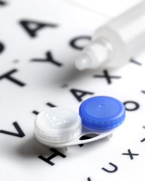

1-800-266-8228
1-800-266-8228
Copyright © 1-800 Contacts.
All Rights Reserved.
The Contact Lens Rule: protecting consumers and holding optometrists accountable.
The FTC has already established:
-
Patient safety concerns have been thoroughly considered.
-
Their five-year review was comprehensive.
-
Automated calls are an acceptable method for verification.
-
Signed Acknowledgment is a minor, reasonable cost with a large consumer benefit.
-
Posting signs won’t solve the problem of optometrists failing to release prescriptions, whereas Signed Acknowledgment will.
The FTC is well aware of the illegal actions many optometrists take to prevent consumers from receiving a copy of their prescription. Because of this, the FTC, in a bi-partisan result, unanimously added a “Signed Acknowledgment” requirement for optometrists.
Signed Acknowledgment = a simple, inexpensive way to ensure the FTC can enforce the requirement to automatically release contact lens prescriptions.
Signed Acknowledgment includes the following:
-
The patient signs a document, copy of a contact lens prescription, or sales receipt stating they received their prescription. The optometrist then keeps a copy.
-
If a digital copy of a prescription is provided to the patient, the optometrist must retain proof the prescription was sent, received, or made accessible, and is downloadable in a common format (such as .PDF), and printable.
The FTC appropriately realized that the only way to hold optometrists accountable to automatically release prescriptions was to introduce Signed Acknowledgment as a method for enforcement. They identified five reasons why this requirement is necessary:
-
Consumer surveys have repeatedly shown that optometrists are not complying with automatic prescription release and are not informing patients of their right to a copy of their prescription.
-
The FTC has received “numerous personal accounts of prescribers’ failure to release prescriptions.”
-
Sellers must verify orders because optometrists fail to release prescriptions. If optometrists would release prescriptions more often, the number of verification requests would go down.
-
Consumers are required to have a copy of their prescription to buy contact lenses. Since optometrists also sell contact lenses, they have an incentive to not release prescriptions to consumers.
All of these reasons lead to one simple conclusion: Signed Acknowledgment is needed by the FTC in order to enforce automatic prescription release.
Signage vs. Signed Acknowledgment
Posting signs that inform customers of their right to their prescription is not the same as providing a copy to customers. Just because a doctor posts a sign in their office doesn’t actually ensure that they provide prescriptions to their patients. Requiring the patient to acknowledge that they received the prescription does.
The FTC agrees:
"Far fewer consumers would learn of their rights from a sign than from being asked to sign a receipt; signage would serve as less of a reminder to prescribers and their staff to release prescriptions; signage would do nothing to aid the Commission in monitoring and enforcing the prescription-release requirement; and relying on patients to notice a sign and ask for their prescription puts the onus on consumers to enforce the Rule..."